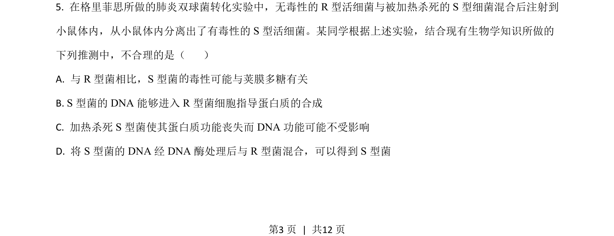
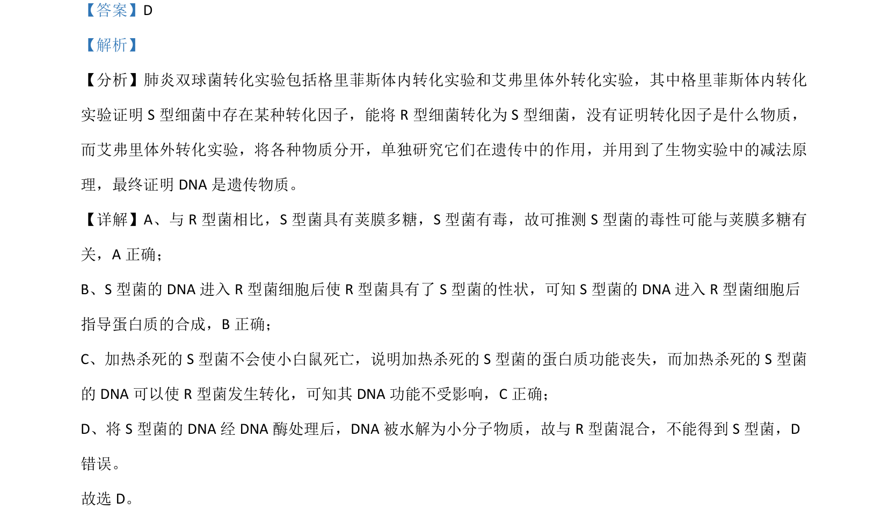

2021-全国乙-05
考点：DNA是遗传物质 蛋白质不是遗传物质 实验设计
题面


摘要
该题通过肺炎双球菌转化实验考查遗传物质本质的推理判断
关联考点
答案与解析

📄 原 PDF 第 3 页：
素材/真题/吉林/2008-2024·（吉林）生物高考真题/2021年高考生物试卷（全国乙卷）（解析卷）.pdf
题干文本
- 在格里菲思所做的肺炎双球菌转化实验中，无毒性的 R型活细菌与被加热杀死的 S 型细菌混合后注射到 小鼠体内，从小鼠体内分离出了有毒性的 S 型活细菌。某同学根据上述实验，结合现有生物学知识所做的 下列推测中，不合理的是（ ） A. 与 R型菌相比，S 型菌 毒性可能与荚膜多糖有关 B. S 型菌的 DNA 能够进入 R型菌细胞指导蛋白质的合成 C. 加热杀死 S 型菌使其蛋白质功能丧失而 DNA 功能可能不受影响 D. 将 S 型菌的 DNA 经 DNA 酶处理后与 R型菌混合，可以得到 S 型菌 的 的